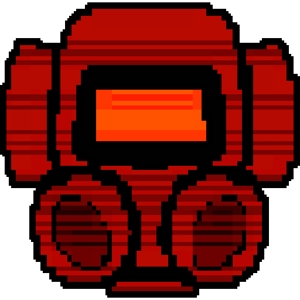
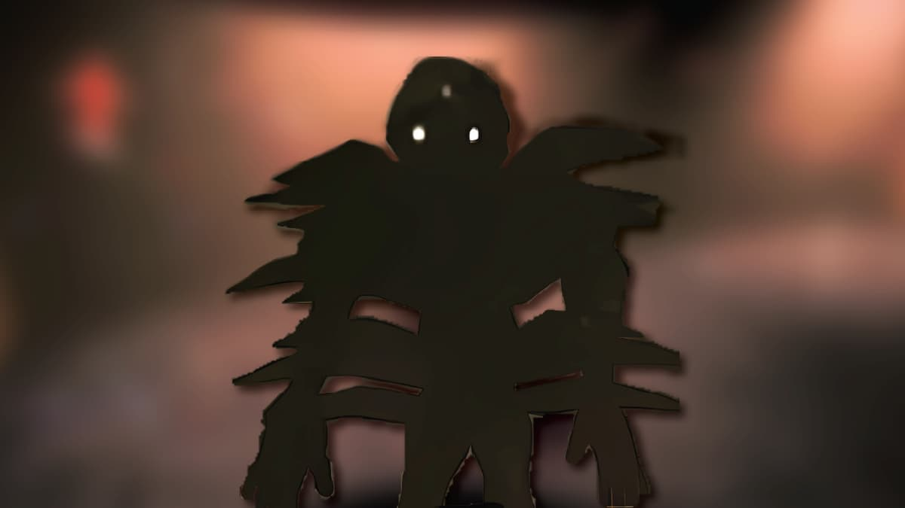

The outdoor entities in this indie game are the entities that only stay inside with the exception of one. They mostly do not pose much of a threat if you know how to get around them and survive. The main tactict to get around outside of the building is to stay a low and quiet, since the most dangerous enemies rely of sight and sound. The entity that goes in and out of the building is one that you cannot survuve from unless you leave completely.
Indoor entities in this game are a decent amount more complicated to work around and survive from, so it's good that they only stay inside. The entities inside do not rely on any sense at all but much they do hear the players and follow them around. There is one entity indoors that doesnt bother the players at all and will only attack if it's being chased, which then it becomes a little dangerous. Many of the entities indoors are avoidable, but once you spot them it becomes much harder to survive.
The Ghost Girl is the entity that can go inside and outside. She will haunt the player until she catches the player. Only the crewmate that is haunted can see her, the rest of the crew members can not.
Jester is a jack-in-the-box entity. Once it spots a player, it'll start winding and once it pops open it will chase every crewmate. It slowly speeds up the longer it is open. The only way to deactivate the Jester is for everyone to leave the building.
The Braken is a entity that follows players around in the dark. If a player makes eye conatct with the entity, he will back off but if eye contact persists he will start chasing the player. The only way to get the Braken to back off is to quicly look away and go the opposite direction.
Coil-Heads are a tougher work around. Once a player spots a Coil-Head, it will stopo moving but if the player were to look away, it will move rapidly. The only way to survive this is to be tactful and get out as fast as possible.
The Eyeless Dog is an outdoor entity that remains outside and relies on hearing alone. Any slight sound will trigger the dog to charge. If a player wants to get by the dog, they will have to crouch and not speak. As long as the player is quiet then they will survive easily.
© All Rights Reserved 2024